Introduction
Data Mining - CdL CLAMSES
Homepage
Nowadays, predictive algorithms have become mainstream in the popular culture due to some spectacular successes:
- iPhone’s Siri;
- Google translate;
- recommendation systems (Netflix challenge);
- business analytics (churn prediction, credit risk assessment);
- and, more recently, chatGPT.
And yet, there is a lot of confusion about the history and the boundaries of the field. For instance, what is “data mining”?
And what are then the differences, if any, with statistics, machine learning, statistical learning, and data science?
What applied problems cannot be solved with classical statistical tools? Why?
Let us consider some real case studies…
Traffic prediction in telecommunications
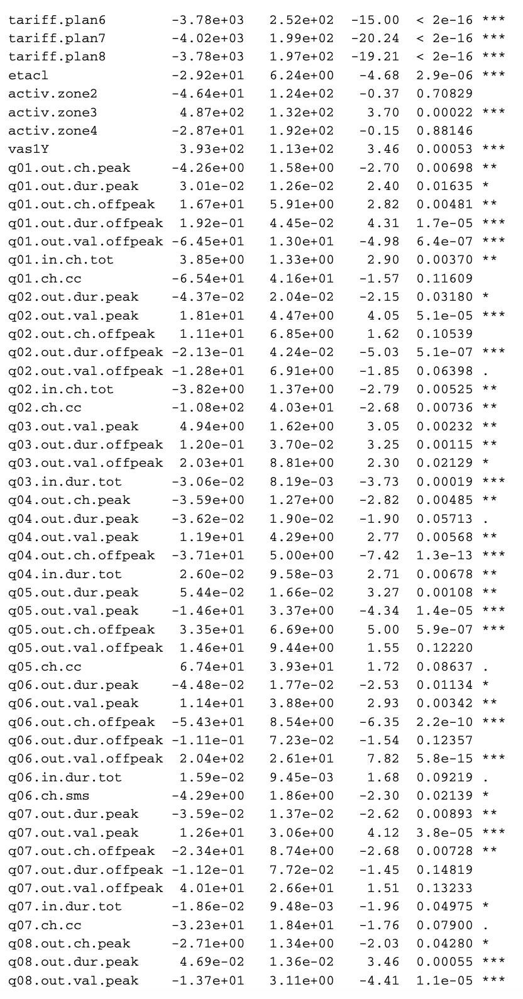
The marketing section of a telecommunications company is interested in analyzing the customer behavior.
Hence, the data science team would like to predict, for every single customer, the telephone traffic.
Traffic is measured as the total number of seconds of outgoing calls made in a given month by each customer.
Appropriate estimations of the overall traffic provide necessary elements for:
- predicting the company’s budget;
- early identification of possible dissatisfaction;
- finding issues in the primary services of the company;
- spotting fraudulent situations.
The dataset has n = 30.619 customers and p = 99 covariates, i.e., the customer activity in previous months.
Traffic prediction in telecommunications II
- The focus is on prediction and on learning something useful from the data, not much on hypothesis testing.
Observational data: data have been collected for other purposes, not for their analysis. Data “exists,” there is no sampling design.
Data are dirty and often stored in big data warehouse (DWH).
The dimension of the data is large in both directions: large n and large p. Hence:
- All p-values are ultra-significant and not very informative in this setting;
- Computations are a crucial analysis aspect.
The relationship between covariates and the response is complex, thus, it is hard to believe our models will be “true.” They are all wrong!
However, having a lot of data means we can split them, using the first half for estimation and the other half for testing.
Microarray cancer data
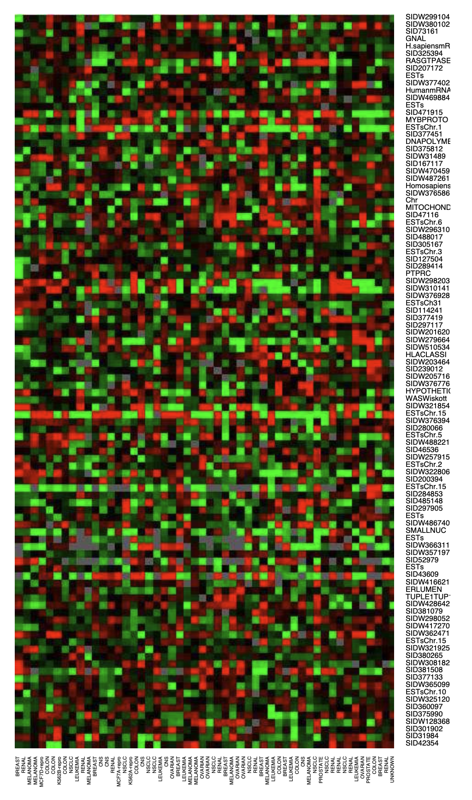
Expression matrix of p = 6830 genes (rows) and n = 64 samples (columns), for the human tumor data.
100 randomly chosen rows are shown
The picture is a heatmap, ranging from bright green (under-expressed) to bright red (overexpressed).
Missing values are gray. The rows and columns are displayed in a randomly chosen order.
Goal: predict cancer class based on expression values.
The main statistical difficulty here is that p > n!
Logistic regression and discriminant analysis wouldn’t work; the estimates do not exist.
Is it even possible to fit a model in this context?
The pitfalls of the old-fashioned way
All the previous case studies cannot be solved using traditional tools; in fact:
- there are tons of variables, sometimes even with p > n and most of them are irrelevant. It is not clear how to select the most useful ones.
- p-values are always ultra-significant and potentially meaningless.
- there are no true models in these contexts. There is little hope that reality follows a linear specification.
The objective is predicting a response variable in the most accurate way. Classical statistics has broader goals including, but not limited to, prediction.
We need a paradigm shift to address the above issues.
For instance, if reality is non-linear, what about going nonparametric? We could let the data speak without making any assumption about the relationship between y and \bm{x}.
Moreover, if p-values and residual plots are no longer informative in this context, how do we validate our predictions?
A highly influential paper (Breiman, 2001)
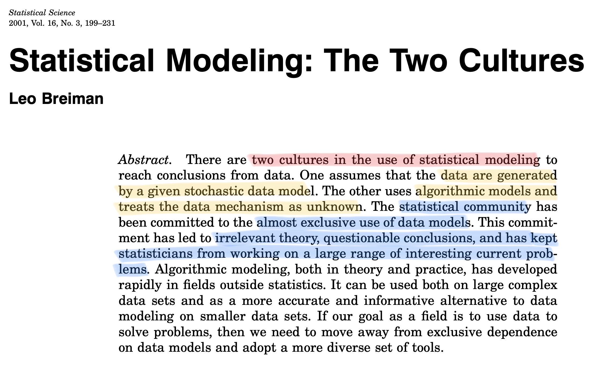
Data models vs. algorithmic models
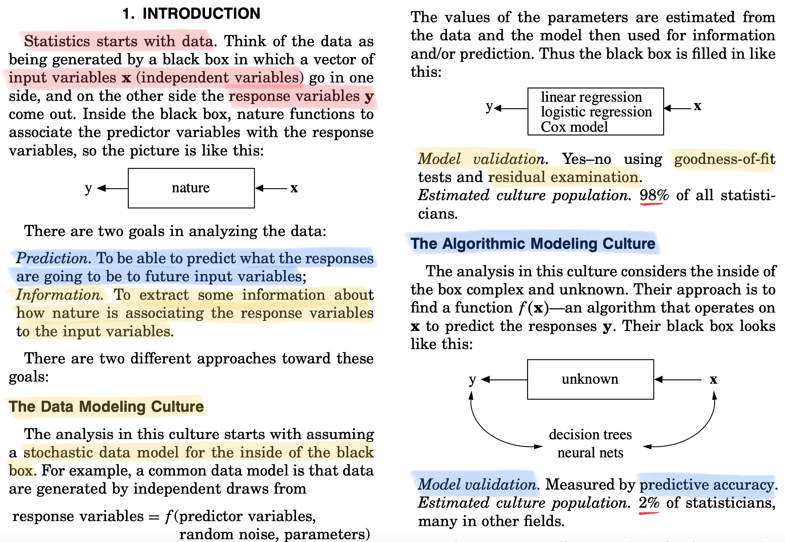
Focus on predictive accuracy & business solutions
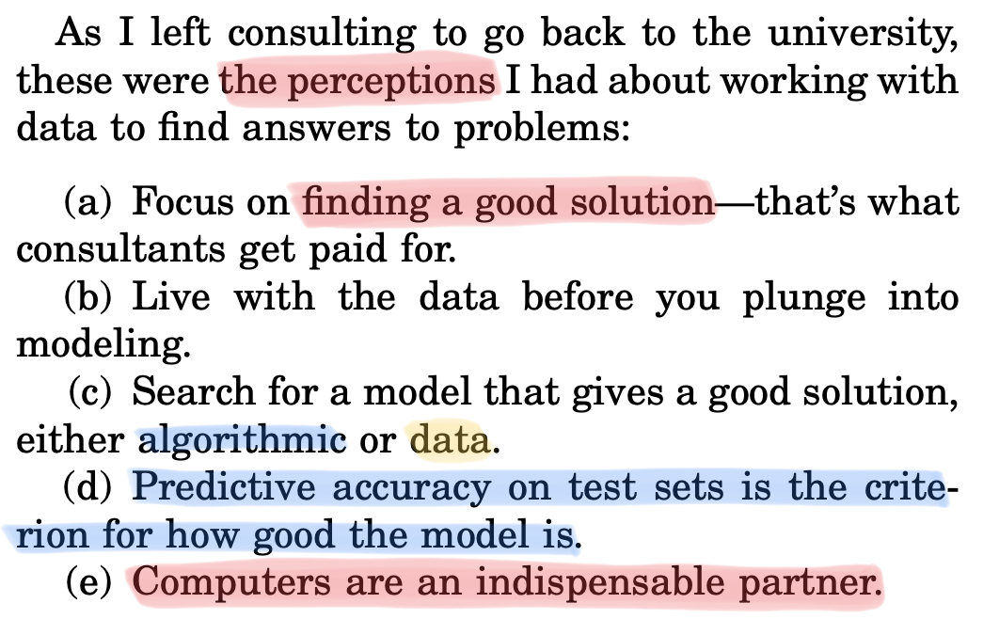
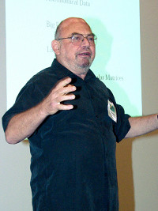
After the Ph.D., Breiman resigned and went into full-time free-lance consulting, and it worked as a consultant for thirteen years.
Breiman joined the UC Berkeley Statistics Department in 1980.
Leo Breiman died in 2005 at the age of 77. He invented many of the mainstream predictive tools: CART, bagging, random forests, stacking.
Statistical modeling: the two cultures
It is tempting to fully embrace the pure predictive viewpoint, as Breiman did in his career, especially in light of the recent media attention and public interest.
“Statistical modeling: the two cultures” has been a highly influential paper written by an outstanding statistician.
In some cases, the paper may sound exaggerated and at times confrontational. These were different times.
It was also a discussion paper!
Two other giants of the discipline, Sir David Cox (died in 2022) and Bradley Efron were among the discussants and raised several critical points.
It is premature to delve into those criticisms. We will get back to them at the end of the course once you have enough knowledge to understand them.
Prerequisites
If you are in this class today, it means…
You already studied a lot of real analysis, linear algebra and probability;
You know how to estimate the parameters of a statistical model, to construct and interpret confidence intervals, p-values, etc. You know the principles of inference;
You know how to explore data using the R statistical software and other tools (SAS, python, etc.). You know principal component analysis and perhaps even factor models;
You know how to fit linear models and how to interpret the associated empirical findings. You are familiar with R^2s, likelihood ratio tests, logistic regression, and so on;
You may have attended a course named “data mining” before, and studied essential tools like linear discriminant analysis, k-nearest neighbors…
- These classical statistical tools are the prerequisites of Data Mining M. We will start from there.
Overview of the topics
| Unit | Description |
|---|---|
| A-B-C | Linear models. Data modeling, the old-fashioned way. Advanced computations. |
| Optimism, conflicts and trade-offs | Bias-variance trade-off. Training and test paradigm, cross-validation. Information criteria, optimism |
| Shrinkage and variable selection | Best subset selection, principal component regression. Ridge regression. Lasso and LARS. Elastic net. |
| Nonparametric estimation | Local linear regression. Regression and smoothing splines. |
| Additive models | Generalized additive models (GAM). Multivariate adaptive regression splines (MARS). |
- Trees, bagging, random forests, boosting, neural networks, support vector machine are not in the program due to time constraints… but you will study them in other courses!
A tension between prediction and interpretability
- Important caveat. Less flexible methods may have more accurate predictions in many case studies, on top of being more interpretable!
Predictive interpretability \neq causality

Predictive interpretability means transparent understanding the driving factors of the predictions. An example is linear models with few (highly relevant) variables.
For example, if I change the value of a set of covariates, what is the impact on predictions?
This is useful, especially within the context of ethical AI and machine learning.
However, the predictive relevance of a variable does not imply a causal effect on the response.
Finding causal relationship requires careful thinking, a suitable sampling design, or both.
A definition of “data mining”
Back to the 1800s
At this point, it may sound natural to ask yourself: what is statistics?
Statistics existed before data mining, machine learning, data science, and all these fancy new names.
Statistical regression methods trace back to Gauss and Legendre in the early 1800s. Their goal was indeed prediction!
50 years of data science (Donoho, 2017)
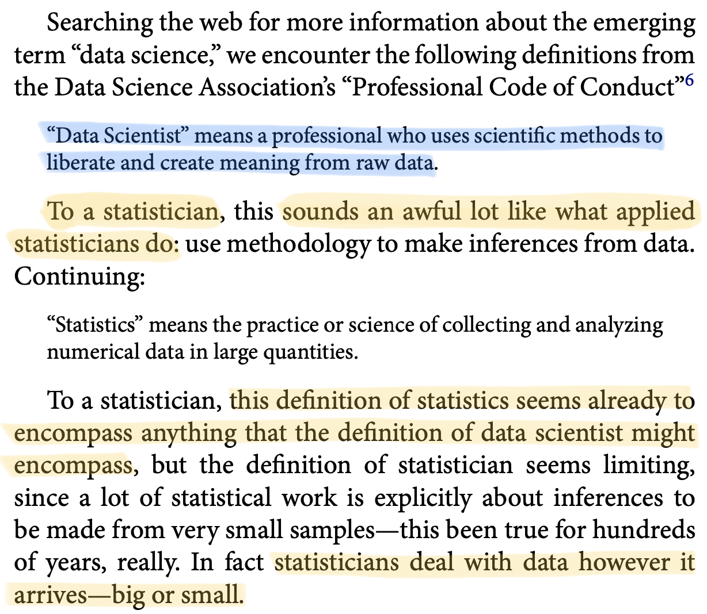
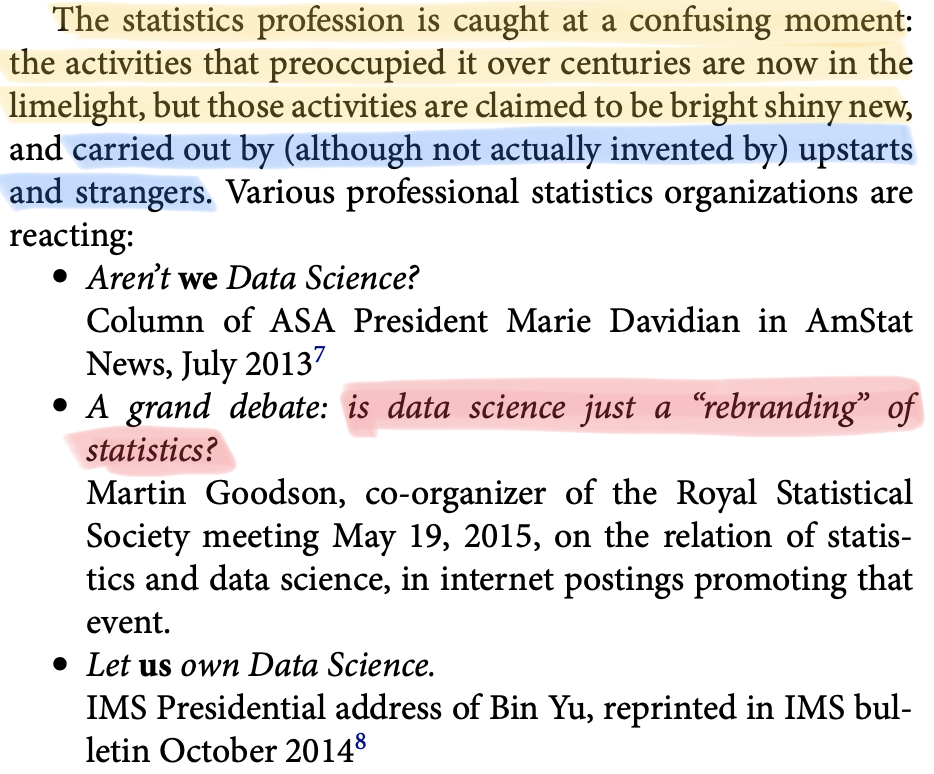
Statistics, an evolving science
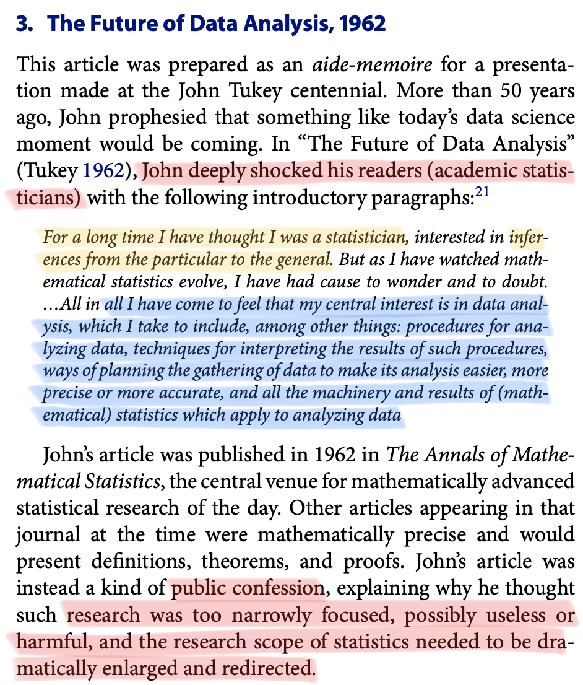
Sure, old-fashioned statistics is often insufficient to address modern challenges.
But statistics has profoundly changed over the years, broadening its boundaries.
The road was paved by Tukey in the 60s, with further exhortations by Breiman.
Modern statistics encompasses also:
- Data gathering and representation;
- Computational aspects;
- Algorithmic and modeling culture to prediction.
Feel free to call it “data science” if you like the bright, shiny new term.
A glossary
While it might seem that data science and data mining have strong roots in statistics, it cannot be denied the existence of two distinct, albeit often overlapping, communities.
For the lack of a better term, we will call these communities the statisticians and the computer scientists, as identified by their background and studies.
| Statisticians | Computer Scientists |
|---|---|
| Parameters | Weights |
| Covariate | Feature |
| Observation | Instance |
| Response | Label |
| R | Python |
| Regression / Classification | Supervised learning |
| Density estimation, clustering | Unsupervised learning |
| Lasso / Ridge penalty | L^1 and L^2 penalty |
A matter of style
“Quelli che s’innamoran di pratica sanza scienzia son come ’l nocchier ch’entra in navilio senza timone o bussola, che mai ha certezza dove si vada.”
Leonardo da Vinci
Course material
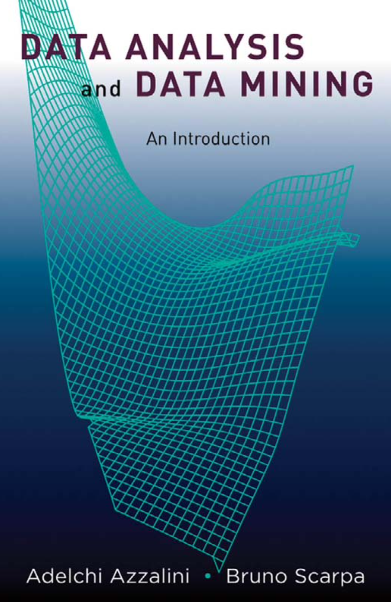
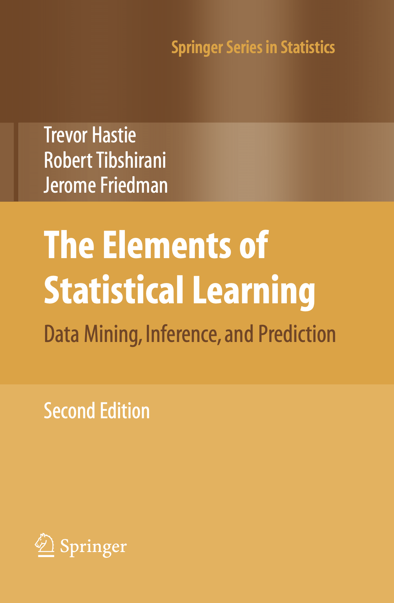
- Azzalini, A. and Scarpa, B. (2011), Data Analysis and Data Mining, Oxford University Press.
- Hastie, T., Tibshirani, R. and Friedman, J. (2009), The Elements of Statistical Learning, Second Edition, Springer.
Exam
The exam is made of two parts:
(20 / 30) Written examination: a pen-and-paper exam about the theoretical aspects of the course.
(10 / 30) Individual assignment: a data challenge.
- You will be given a prediction task, and you will need to submit your predictions and produce a report of about 4-5 pages;
- You will make use of the Kaggle platform;
- The data challenge will be announced in the second half of the course.
- Further info will be provided in due time.
Both parts are mandatory, and you need to submit the assignment before attempting the written part. The report expires after one year from the end of the course.
The final grade is obtained as the sum of the above scores.
Epilogue
“Those who ignore statistics are condemned to reinvent it.”
Bradley Efron, Stanford University.
References
- Main references
- Breiman, L. (2001). Statistical modeling: the two cultures. Statistical Science, 16 (3), 199–215.
- Donoho, D. (2017). 50 years of data science. Journal of Computational and Graphical Statistics, 26, 745-766
- Specialized references
- Efron, B. (2020). Prediction, Estimation, and Attribution. Journal of the American Statistical Association 115 (530), 636–55.
- Tukey, J. W. (1962). The future of data analysis. Annals of Mathematical Statistics, 33, 1–67.